This tutorial gives a walk-through of am imagingFCCS evaluation. The example w chose is a measurement of different mixing rations of single- and double-labeled DNA fragments (607bp, Alexa-488-, Alexa-594- and Alexa-488+594-labeled).
We will evaluate two measurements: one of a DL-only sample and one with a low fraction of DL (cAB:cA:cB=0.5:1:1). Note that the labeleing was not perfect, so also the DL-only sample contains single-labeled fragments of both colors!
After correlating the measurements to yield the green- and red-channel autocorrelation functions (ACF0, ACF1) and the two color crosscorrelation function (FCCS).
The project now contains three imagingFCS raw data records for each sample:
Calculate relative FCCS amplitudes
In this part of the tutorial we will calculate the relative CCF amplitude for each pixel, which is defined as:
$$bmath:\mbox{relFCCS}(x,y)=\frac{\sum_{i=0}^{N_{avg}}g_{FCCS}(x,y; \tau_i)}{\sum_{i=0}^{N_{avg}}g_{ACF}(x,y; \tau_i)}$$
where $$math:N$$ is a number of lag times $$math:\tau_i$$ to average over. the lag time $$math:\tau_0$$ is the minimal lagtime of the curve. The correlation curve
$$math:g_{ACF/FCCS}(x,y;\tau)$$ describes the auto- (ACF) or crosscorrelation (FCCS) function at the pixel coordinate $$math:(x,y)$$ and the lagtime $$math:\tau$$.
Averaging over $$math:N_{avg}$$ channels/lags is performed to overcome the noise of the recorded correlation functions. By which ACF to divide (green or red) has to be
selected according to the application. Usually one chooses the ACF with the lower amplitude (here typically the red ACF1, see above).
$$note:This measure relFCCS(x,y) can give an idea about the amount of corsscorrelation, but this is NOT crosstalk- or FRET-corrected.$$
To perform this evaluation, follow these steps:
- Go to QuickFit's main window and choose the menu entry "Tools|imFCCS|calculate relative CCF amplitudes". A new window will pop up:
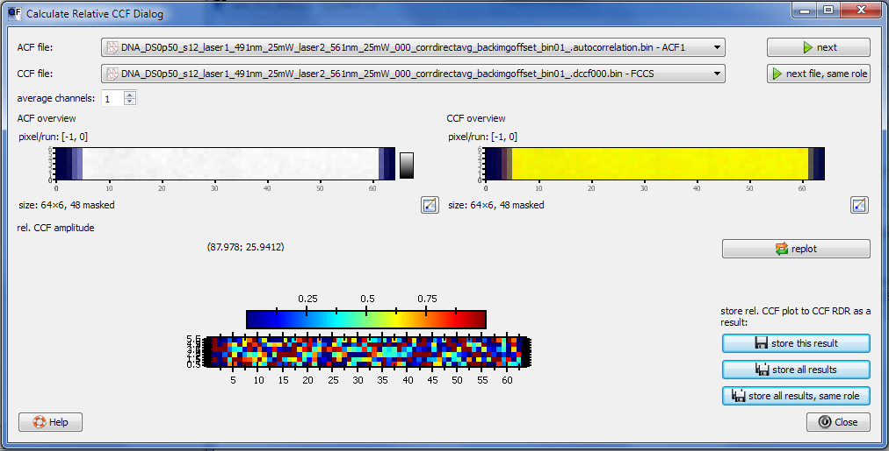
- Select the ACF1 and FCCS for the first measurement in the top two comboboxes. Below these, the overview images of the two selected records are shown.
- Select $$math:N_{avg}=5$$ by entering 5 into the edit field "average channels".
- The lowest image plot shows the result image with a fixed color scale from 0 to 1.
$$note:Some pixels are above or below the sensible range of 0..1, which is mainly caused by the noisiness of the curves.$$
- click on "store this result" to store this image of rel. CCF amplitudes to the FCCS record. You can also click on "store all results" to store FCCS/ACF0 and
FCCS/ACF1 from every measurement in the project or "store all results, same role" to only store FCCS/ACF1, but from all records in the project.
Use "store all results"
now and close the window when done.
- Open the FCCS RDR from the project for each measurement and choose the "Parameter Image" tab.
- Select the result set "rel. CCF amplitude of CCF/ACF: 'FCCS'/'ACF1'" and the parameter "results: relative CCF amplitude" therein.
- If you choose the "Histogram" tab, you can look at the distribution of relFCCS(x,y) values over the whole image:
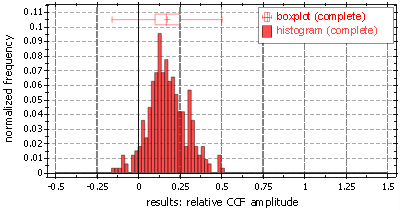
DL:SL=0.5, average=0.46, standard deviation=0.34
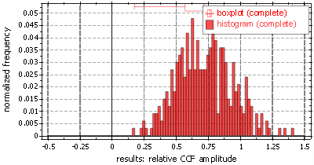
DL-only, average=0.73, standard deviation=0.22
$$note:The contributions outside 0..1 which lead to the overshooting/undershooting pixels in the dialog above!$$
Here are also the parameter images (color range set to 0..1!!!):
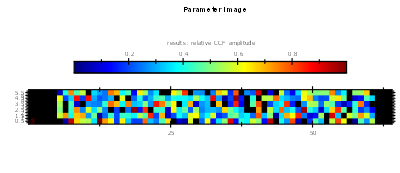
DL:SL=0.5
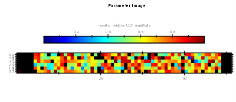
DL-only
Global imFCCS fit
Add evaluation item to project
As a final step we will perform an imaging FCCS fit with in per-pixel-linked parameters. So we will fit (for each pixel) the two ACFs and the FCCS curve together to
three distinct models. The models are parameterized with the concentrations $$math:c_A$$, $$math:c_B$$ and $$math:c_{AB}$$ (corresponding to green-SL, red-SL and green-red-DL) and the respective
diffusion coefficients $$math:D_A$$, $$math:D_B$$ and $$math:D_{AB}$$. Some of these parameters occur in several of the model functions $$math:g_{gg}(\tau)$$, $$math:g_{rr}(\tau)$$ and $$math:g_{gr}(\tau)$$
for the green, the red and the FCCS channel. E.g. the double-labeled species AB is visible in the green channel, the crosscorrelation and (via inter-channel crosstalk) the red channel.
Perform these steps:
- In the main window add an "imFCCS Curve Fitting" evaluation item to the project (menu "Data Items|Insert Evaluation|imFCCS Curve Fitting"):
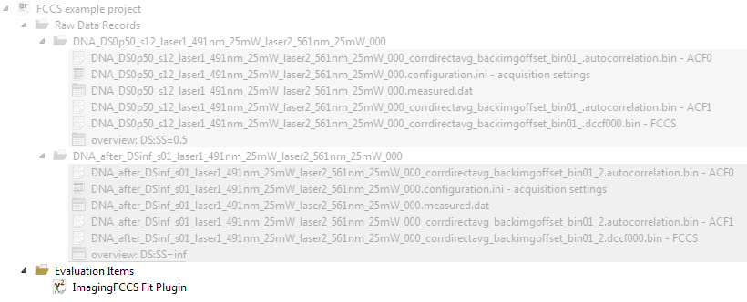
- Open the fit module with a double-click:

- On startup only one file is selected (remember we want to select 3: Two ACFs and the FCCS) and a standard model (SPIM-FCS: Diffusion (1/sqrt(e) radii) ) is choosen in the parameter list at the bottom.
In the list you can select a different file (row "file"), or a different "fit model" and it is possible to change the current model parameters in the remaining rows. To add a second file
or to remove the last file you can use the buttons "add file" and "remove file".
User-Interface Tutorial
We will now first do short walk through the user-interface with dummy models. These steps can be jumped over, if you are already familiar with them.
Also this will NOT yet give a reasonable fit, but quickly explain the user interface.
For the SPIM-FCCS tutorial, see below.
- For now press "add file" twice and select the ACF1 and FCCS in addition to the already selected ACF0.
The correlation function display will show the three selected files (possibly switch the "errors" to none to prevent the display of error bars). All the fit models will remain at their
default settings:
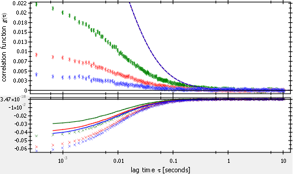
For each file the same fit model is selected and we will use those for now (they are proper SPIM-FCS fitting models after all!).
- Now we will set some initial parameters (basically the PSF sizes):
| ACF0 | ACF1 | FCCS |
|---|
| $$math:\sigma_{xy}=320$$ | $$math:\sigma_{xy}=340$$ | $$math:\sigma_{xy}=320$$ |
| $$math:\sigma_{z}=575$$ | $$math:\sigma_{z}=600$$ | $$math:\sigma_{z}=600$$ |
- In a next step we will link some parameters: We can assume that the diffusion coeffcients should all be the same, as we have only 607bp DNAs, independent of the type of label(s) they carry,
so in the "global" column and the D1-row for each file we select "global param #0". Now these parameters are linked together and editing one of the will alter all,
so for now enter 8 into any of the three "value" columns and observe what happens to the other D1 values. The same will happen during a fit: These three parameters will
always have the same value and will be treated as a single fit-parameter.
Also enter the values 3, 7 and 15 for the particle number parameters "N" for the three columns and
observe what happens to the plot:
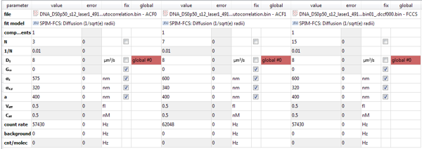
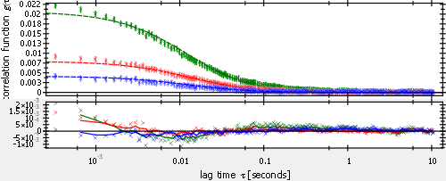
$$note:The parameters with a light grey background can not be edited by the user, but will be calculated by the model (e.g. the effective volume or the concentration).$$
- Now to perform a first fit, click on "Fit current", which will further optimize the fit results.
- So far we only fitted the "average" run, i.e. the average correlation function (ACF/FCCS) over all non-masked pixels. In order to fit the curves for each pixel,
deselect "save long result strings" and first click on "Copy to Initial". This will use the current fit results as initial fit values (good guess) for each pixel's fit.
Finally click "Fit All Pixels" on the rhs of the dialog.
The plugin will now iterate over all pixels and perform the fits there.
$$note:As this is more complex than a standard single-curve fit, you will have to allow for more time here, than in a standard imFCS fit!$$
- Note that in the "file sets" list on the rhs, two entries have appeared:
 The dark-blue entry (and all other entries of this color) represent file-combinations (or sets) for which you already performed a fit. The grey entries represent
file combinations that QuickFit thinks you might also want to fit. Here it found out that all three files fitted together were from teh same group and from there
you used the roles ACF0+ACF1+FCCS, so it proposes the same combination of roles from the second measurement. If you e.g. click on the grey entry you will see
that these files will be loaded then an a click on "Fit all Pixels" will also fit the second measurement (DL-only). The same initial parameters and parameter-linking
settings as for the last set of files will be used!
The dark-blue entry (and all other entries of this color) represent file-combinations (or sets) for which you already performed a fit. The grey entries represent
file combinations that QuickFit thinks you might also want to fit. Here it found out that all three files fitted together were from teh same group and from there
you used the roles ACF0+ACF1+FCCS, so it proposes the same combination of roles from the second measurement. If you e.g. click on the grey entry you will see
that these files will be loaded then an a click on "Fit all Pixels" will also fit the second measurement (DL-only). The same initial parameters and parameter-linking
settings as for the last set of files will be used!
- If you want to explore the fit at any position in the image, just click on the pixel of interest in the overview image and the pixels correlation curves and fitted
model curves will be displayed. To return to the "average" run, just enter -1 into the "pixel/run" edit field above the overview image.
- Finally you can open e.g. the ACF0 raw data record in the project tree and look at the fit result "diffusion coefficient of species 1" in the result set. The parameter image looks like this:
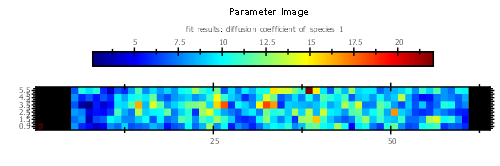
and the parameter distribution of the diffusion coefficient is:
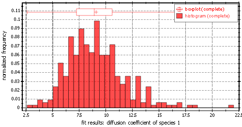
In the next section we will do a propr SPIM-FCCS fit taling into account also the crosstalk between the two channels.